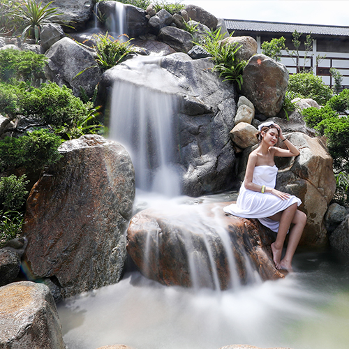
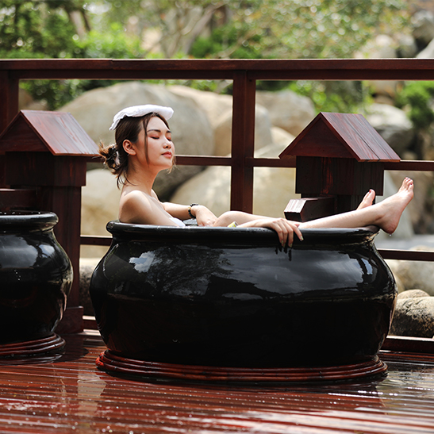
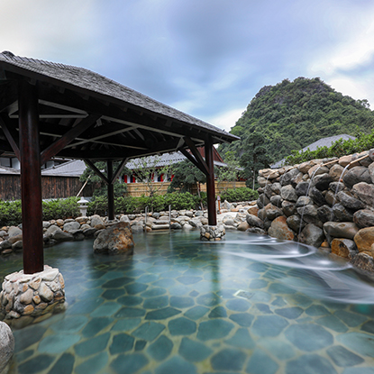
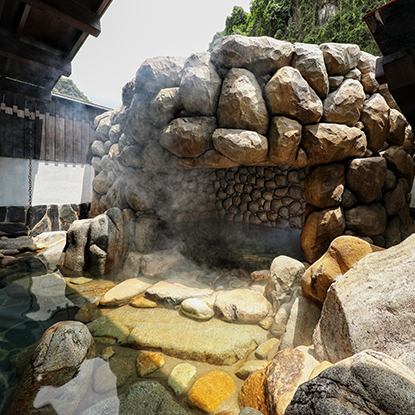

Bể tắm Đào Viên
Bể tắm đào viên được đặt ở không gian ngoài trời. Để tạo sự đặc biệt và độc đáo, Yoko thêm vào bể những loại quả theo mùa như chanh, bưởi, cam,... Vào những ngày thời tiết dịu nhẹ kèm mưa lây phây, thật lãng mạn và sảng khoái khi ngâm mình trong Bể Đào viên mà nhìn ngắm vẻ đẹp xanh mướt của núi rừngh.
Bể tắm chum
Bể tắm chung mang lại không gian thư giã riêng tư ở khu Public. Trải nghiệm tắm onsen giữa thiên nhiên là một cách tuyệt vời để tái tạo làn da mới.
Bể tắm Đá
Thiết kế bể tắm đá được lấy cảm hứng từ thiên nhiên hoang dã mang lại cảm giác thư thái như trở về với tự nhiên yên bình và trong trẻo. Dòng nước khoáng nóng Quang Hanh mang lại sự thư giãn, giảm căng thẳng và mệt mỏi.
Bể tắm Hang
Bể tắm hang được lấy cảm hứng thiết kế từ hình dạng hang động trong tự nhiên và mang phong cách kỳ bí. Quý khách có thể tận hưởng trải nghiệm tắm khoáng duy nhất này tại Yoko Onsen. Do kết cấu của hang đá nên bể tắm hang có thể giữ được nhiệt độ tốt cao nên hãy cẩn trọng khi bước vào bể.